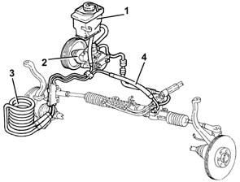
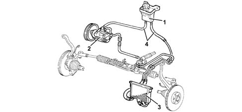
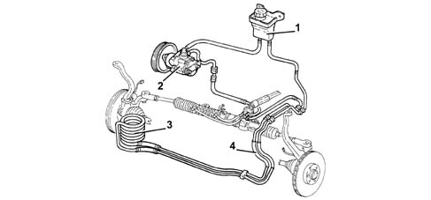

4130B power steering hydraulic sytem
- Path
- Descriptions > 41 STEERING > 4130 POWER ASSISTED STEERING > 4130B power steering hydraulic sytem
- Kind
- system description
- Applies to
- all engines; all production periods
- Interactive page
- https://sloeber94.github.io/elrnDB-a156/en/#/3232937
Applies to: all engines; production: fino a 03/98, da 04/98 a 02/99
Refer 41
Applies to: engines: 1.6 TS , 1.8 TS, 2.0 JTS, 2.0 JTS; all production periods
CONSTRUCTION FEATURES
View of the system

1- Power assisted steering fluid reservoir 2 - Power steering pump 3 - Coil 4 - Pipes
The power steering hydraulic system, standard for all versions, has a pump which contributes significantly to silence of operation.
A further contribution to silence is provided by the solutions adopted for the system:
- high-pressure fluid pipes of optimum length and shape with internal resonators which damp fluid pulsing;
- cooling coil to keep the power steering fluid temperature low and avoid cavitation.
The fluid reservoir located at the side of the modular intake manifold, above the power assisted steering pump and contains a filter that traps impurities bigger than 100 micron.
Applies to: engines: 3.2 V6; all production periods
CONSTRUCTION FEATURES
View of the system

1 - Power assisted steering fluid reservoir 2 - Power steering pump 3 - Radiator 4 - Pipes
The power steering hydraulic system, standard for all versions, has a pump which contributes significantly to silence of operation.
A further contribution to silence is provided by the solutions adopted for the system:
- high-pressure fluid pipes of optimum length and shape with internal resonators which damp fluid pulsing;
- cooling radiator to keep the power steering fluid temperature low and avoid cavitation.
The fluid reservoir is located on the engine compartment bulkhead and contains a filter that traps impurities larger than 100 micron.
Applies to: engines: 2.5 V6, 1.9 JTD 8v , 2.4 JTD 10v; all production periods
CONSTRUCTION FEATURES
View of the system

1 - Power assisted steering fluid reservoir 2 - Power steering pump 3 - Coil 4 - Pipes
The power steering hydraulic system, standard for all versions, has a pump which contributes significantly to silence of operation.
A further contribution to silence is provided by the solutions adopted for the system:
- high-pressure fluid pipes of optimum length and shape with internal resonators which damp fluid pulsing;
- cooling coil to keep the power steering fluid temperature low and avoid cavitation.
The fluid reservoir is located on the engine compartment bulkhed and contains a filter that traps impurities larger than 100 micron.